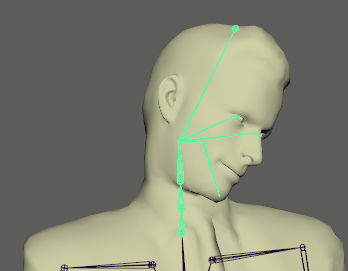

当您在 HumanIK 窗口中选择  >“编辑 > 定义 > 编辑特性”(Edit > Definition > Edit Properties)时，“属性编辑器”(Attribute Editor)中的“HIKproperties”选项卡上会提供以下“重定目标特定”(Retarget Specific)属性。
>“编辑 > 定义 > 编辑特性”(Edit > Definition > Edit Properties)时，“属性编辑器”(Attribute Editor)中的“HIKproperties”选项卡上会提供以下“重定目标特定”(Retarget Specific)属性。
- 匹配源(Match Source)
-
确定目标角色是否完全跟随源角色的移动，以匹配其关节在空间中的位置、步幅的长度和移动范围，而无需考虑两个角色之间的比例差异。
启用时，解算器会计算和补偿目标角色和源角色之间的空间。目标角色仍随源角色的脚的移动而移动，但 Maya 会做出调整以补偿比例差异。
例如，启用该特性时，如果将行走中的动画的目标从较小的角色重定为较大的角色，则会使较大角色将它的脚落在与较小角色相同的位置，使其看起来具有极小的步幅。
- 动作空间补偿模式(Action Space Comp Mode)
- 确定目标角色应用于源角色关节的位置以解决两个角色之间的比例差异的补偿量。从下列选项中进行选择：
- 禁用(Off)
-
禁用任何补偿。
- 自动(Auto)
-
（默认设置）自动计算和应用比例补偿。
- 用户(User)
-
用于设置精确值（在“动作空间补偿”(Action Space Compensation)字段中），以确定如何缩放重定目标以补偿源角色和目标角色的不同大小。
例如，值越高，角色的步幅越大。值越小，步幅越小。
- 动作空间补偿(Action Space Compensation)
-
如果将“动作空间补偿模式”(Action Space Comp Mode)设置为“用户”(User)，Maya 会在确定目标角色的位置时，将此值作为百分比应用于源角色执行的所有移动的大小。默认值为 100。使用以下说明作为指导原则：
- 将值设定为 0.0 会使目标角色保持静止不动。
- 将值设定为小于 100.0 会导致目标角色的移动步幅小于源角色的移动步幅。
- 将值恰好设定为 100.0 会使目标角色匹配源角色的移动，而不补偿比例差异。
- 设定更高的值会导致目标角色的移动步幅大于源角色的移动步幅。
- 镜像动画(Mirror Animation)
-
设定目标角色是否镜像源角色的移动。
启用时，目标角色镜像源角色的移动。解算器沿 X 轴翻转源角色每个节点的位置，以确定目标角色的对应节点的所需位置。这实际上是左右翻转：源角色移动左臂时，目标角色移动右臂，依此类推。禁用时，目标角色不镜像源角色的移动。
- 髋部高度模式(Hips Level Mode)
-
设置为“自动”(Auto)时，自动计算髋部高度补偿（默认设置）。设置为“禁用”(Off)时，禁用髋部高度补偿。设置为“用户”(User)时，可以通过更改“髋部高度”(Hips Level)的值手动调整髋部的高度。
- 髋部高度(Hips Level)
-
允许您控制髋部相对于其重心的高度。
- 脚间距模式(Feet Spacing Mode)
-
默认情况下，“自动”(Auto)模式会调整目标角色左踝与右踝之间的距离。解算器将它的值与源角色左踝与右踝之间的间距相加，以确定目标角色左踝与右踝之间的间距。设置为“禁用”(Off)时，不进行调整。设置为“用户”(User)时，可以输入特定“脚间距”(Feet Spacing)值来调整踝部。
- 脚间距(Feet Spacing)
-
“脚间距模式”(Feet Spacing Mode)设置为“用户”(User)时，输入特定值来调整左踝与右踝之间的间距。
- 踝部高度补偿模式(Ankle Height Comp Mode)
-
默认情况下，“自动”(Auto)模式可确保脚与地板正确接触。设置为“禁用”(Off)时，禁用踝部高度补偿。设置为“用户”(User)时，可以通过设置“踝部高度补偿”(Ankle Height Compensation)值手动调整模型的脚与地板之间的距离。
- 踝部高度补偿(Ankle Height Compensation)
-
如果源角色与目标角色的比例不同，请使用该值调整角色的脚与地板之间的距离。如果角色的脚很大，或者角色具有特殊的高度要求（例如，高跟鞋或靴子），也可能必须调整该选项。
- 质心补偿模式(Mass Center Comp Mode)
-
启用时，Maya 会将“质心补偿”(Mass Center Compensation)值应用于重定目标的动画。禁用时，不进行补偿。
- 质心补偿(Mass Center Compensation)
-
启用“质心补偿模式”(Mass Center Comp Mode)时，可通过防止角色的髋部在腿移动时过快降低以及通过防止脚步沉重来平滑腿的移动。默认值为 80。
- 颈部运动减少(Neck Motion Reduction)
-

“颈部运动减少”(Neck Motion Reduction)滑块从 100% 移动到 0%
用于衰减从角色身体传递到颈部的运动量。在没有足够捕获数据的情况下创建运动时，“颈部运动减少”(Neck Motion Reduction)很有用。
“颈部运动减少”(Neck Motion Reduction)滑块通过平均化角色颈部和胸部之间的运动来起作用：- 0%：运动不减少
- 50%：将传递的运动减半，运动发生衰减
- 100%：颈部按与胸部的预定距离移动，运动僵硬且不自然，因为没有任何运动从身体传递到颈部
“达到”(Reach)属性
“达到”(Reach)属性用于定义目标角色和源角色之间的平移达到和旋转达到。请参见调整重定目标参数。“达到”(Reach)设置可用于指定希望角色骨架上的每个特定骨骼达到其运动源的百分比。
可以基于列出的每个身体部位（包括头部、胸部、肘部、腕部、手、膝盖、踝部和脚）的效应器设定达到值。
若要控制达到量，请拖动设置的滑块，或在数值字段中键入值。通过滑块操纵“达到”(Reach)时遵循以下准则：
- 为 100% 时，角色的身体部位完全达到源的身体部位。
- 为 50% 时，角色的身体部位在源的身体部位和角色的位置之间取平均值。
- 为 0% 时，对模型的指定身体部位的影响相当于禁用该选项。
“拉动”(Pull)属性
“拉动”(Pull)属性用于管理在移动身体的其他部位时某些身体部位受影响的程度。效应器的“拉动”值确定该效应器相对于作用于角色的其他效应器的优先级。设置较高的“拉动”(Pull)值会导致角色的其余身体部位看起来向该效应器倾斜。请注意，仅当效应器的达到平移值大于 0 时才应用“拉动”。
仅当效应器距身体超过一定距离时“拉动”效果才明显。例如，仅当腕部效应器距身体非常远，以致于伸直手臂时腕部骨骼够不到效应器时，该效应器的拉动效果才可见。在这种情况下，如果“拉动”设定为 100，其余身体部位将会倾斜，以便腕部与效应器接触。
调整“拉动”(Pull)值是一项高级技术。对于常规重定目标操作，不建议更改默认值。
“刚度”(Stiffness)属性
效应器的“刚度”(Stiffness)值用于确定另一效应器的拉动对该效应器产生影响时，该效应器保持其原始位置、方向或角度的程度。仅当效应器的达到旋转值大于 0 时才应用“刚度”(Stiffness)。有关这些设置的描述，请参见 HIK 刚度属性。
调整“刚度”(Stiffness)值是一项高级技术。对于常规重定目标操作，不建议更改默认值。
“侧滚”(Roll)和“俯仰”(Pitch)属性
用于选择“绝对”(Absolute)或“相对”(Relative)模式。
- “相对”(Relative)模式 - 处理 HIK 生成的侧滚量
- “绝对”(Absolute)模式 - 处理用户生成的和 HIK 生成的侧滚量
“拉动”(Pull)和“阻力”(Resist)属性
“拉动”(Pull)属性用于确定在移动身体的其他部位时某些身体部位受影响的程度。
- 髋部强制重力(Hips Enforce Gravity)
- 用于设置髋部的阻力百分比。强制角色髋部在其脚之间。默认情况下，“髋部强制重力”(Hips Enforce Gravity)设置为 60%。
注： 必须将“髋部刚度”(Hips Stiffness)设置为非零值，才能利用“强制重力”(Enforce Gravity)设置。请参见 HIK 刚度属性。
- 左/右膝最大伸展(Left/Right Knee Max Extension)
- 可使用这些设置在腿完全伸展时限制腿，以防止出现膝部和肢体折断。值越大，肢体伸展得越平缓。默认情况下，值为 50 时会更正大多数肢体折断。
- 左/右肘最大伸展(Left/Right Elbow Max Extension)
- 使用此设置可在左臂或右臂完全伸展时对其进行阻尼，以防止肘部和肢体折断。值越大，肢体伸展得越平缓。默认情况下，值为 50 时会更正大多数肢体折断。
- 左/右膝压缩(Left/Right Knee Compression)
- 在伸展的腿弯曲时更改其刚度。为 100%（完整效果）时，伸展的腿不弯曲，而是推动角色的髋部，从而移动角色。
- 左/右肘压缩(Left/Right Elbow Compression)
- 在伸展的手臂弯曲时更改其刚度。为 100%（完整效果）时，伸展的手臂不弯曲，而是推动角色的胸部，从而移动角色。